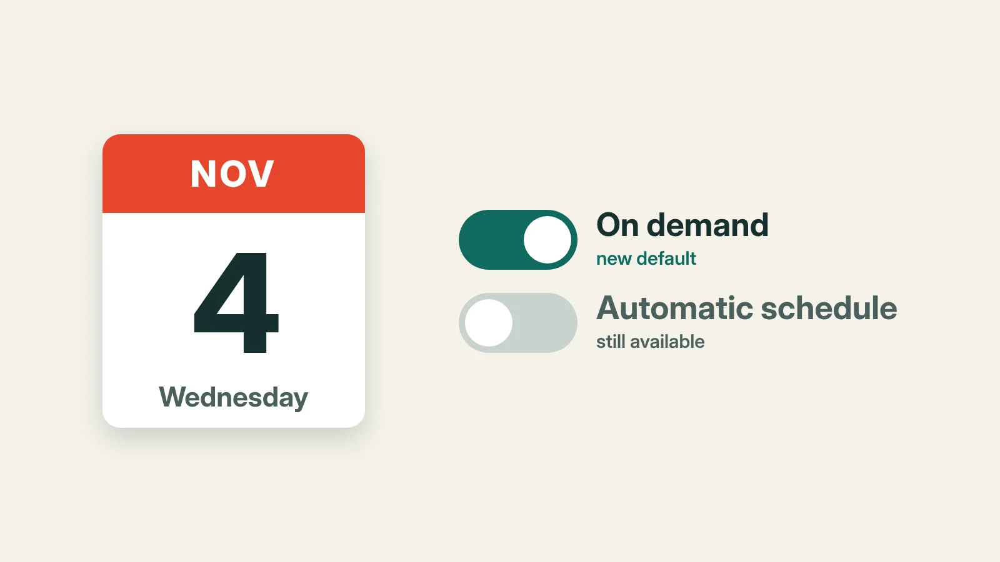

Marketplaces desk · Reselling
eBay payouts go on-demand by default from November 4. Here's the setting to check
From Wednesday, November 4, eBay starts gradually moving eligible US sellers onto 'eBay balance', where payouts are on demand by default. Automatic daily, weekly, biweekly and monthly payouts are still there, but you may have to choose one again. Here's how to tell, and what to set.

The short version: If you sell on eBay in the US, your sales money may stop landing in your bank on its own once eBay balance is switched on for your account. eBay starts that rollout gradually on Wednesday, November 4, and payouts under eBay balance are on demand by default. If you rely on a daily or weekly payout, check your schedule as soon as eBay tells you the change has reached your account.
Using your balance adds no fee, and your selling fees stay the same. What changes is when the money moves, and in the busiest selling weeks of the year, that's the money that pays for your postage and your stock.
What eBay is changing
eBay's new balance terms take effect for existing balance users on November 4, and apply to new sellers enrolled on or after October 21 once they accept them. eBay's help page says it is introducing eBay balance gradually to eligible US private sellers and sole proprietors, and that it will notify you when it's on for your account. So not everyone changes on Wednesday.
Once it's on, your sales money goes into your eBay balance first. eBay's terms say funds usually become available within two business days, though timing can vary. From there, on-demand is the default: you press withdraw when you want the money. If you never ask for a withdrawal, the terms say eBay pays out your available funds no more than 330 days after your most recent sale.
That's a long time for holiday money to sit still.
The thing most sellers will miss
Value Added Resource, which reported eBay's October 20 notice to sellers, says shops already on a daily, weekly, biweekly or monthly schedule are reset to on-demand when they're enrolled. eBay's own pages confirm on-demand is the default but don't spell out the reset, so check your schedule after you're enrolled and set it again if it has changed.
There's a second catch. Daily payouts switch off on-demand withdrawals. Weekly, biweekly and monthly schedules let you do both. If you like to pull money out early for a big postage run, a weekly schedule keeps that option open.
What the balance is, and isn't
You can spend your eBay balance on eBay itself, including shipping labels and promoted listings, with no extra fee. It doesn't earn interest, and the terms say it isn't covered by FDIC pass-through insurance. It isn't a bank account. Funds marked "On hold" aren't counted in your balance and can't be spent or withdrawn.
Getting money out quickly costs extra. eBay lists a $2.00 flat fee for each express payout to an eligible bank account or debit card, which usually arrives within 30 minutes. A standard payout usually reaches your bank 1 to 3 business days after you start it. eBay's terms add that withdrawals can take up to 12 hours to switch on at first.
What to do this week
- Watch for eBay's notice that eBay balance is on for your account.
- Open Seller Hub, go to Payments, then Payout settings, and pick daily, weekly, biweekly or monthly. Weekly payouts start on Tuesdays.
- Finish identity verification if eBay asks. Sellers who don't pass can't receive payouts until they do.
- Plan your postage money. If you buy labels from your balance, leave enough in it for the next few days of orders. Our free cash-flow forecaster for resellers shows when money comes in and goes out.
What's still unknown: eBay hasn't said when every account will be switched over, and its help pages still show some older wording about daily payouts. We'll update this story if that changes.
What we checked: eBay's balance Terms and Conditions and its help page on getting paid, both read on November 2, 2026, and Value Added Resource's report of eBay's October 20 notice. All three are listed below.
Sources, checked 2 Nov 2026
- eBay balance Terms and Conditions (US), effective 4 Nov 2026 for existing users, read 2 Nov 2026. pages.ebay.com
- eBay Help, 'Getting paid for items you've sold' (payout schedules and eBay balance), read 2 Nov 2026. ebay.com
- Value Added Resource, 'eBay makes seller balance mandatory, resets payout schedules in November update', read 2 Nov 2026. valueaddedresource.net
Applies to: US-based private sellers and sole proprietors on eBay.com (sellers registered in New Mexico are left out for now).
How this was made: researched from the sources below, checked claim by claim and edited by Drew Halden. Editorial responsibility: ePORTS LLC. Nothing here is legal, tax or financial advice. Spotted an error? Tell us and we'll correct it on this page.